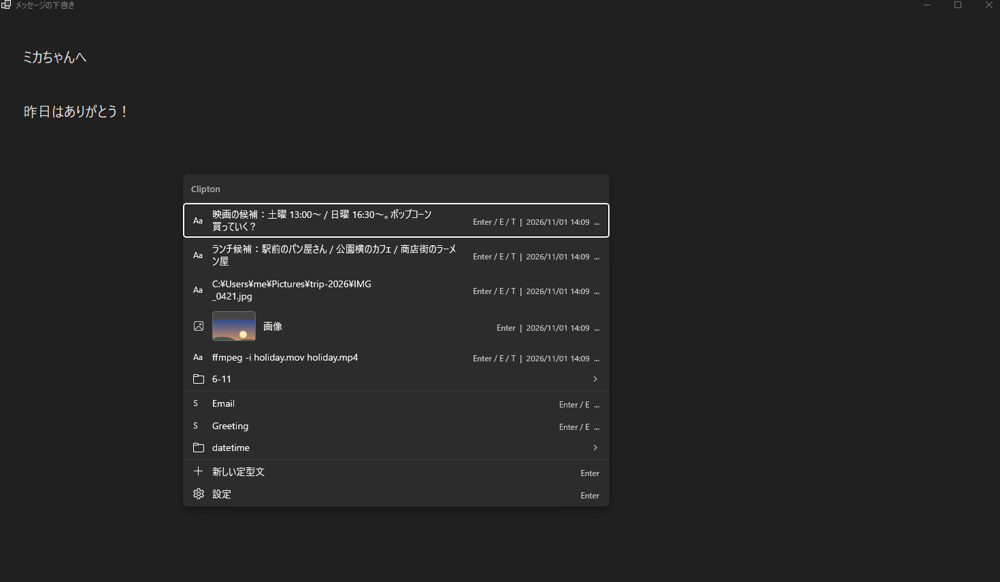
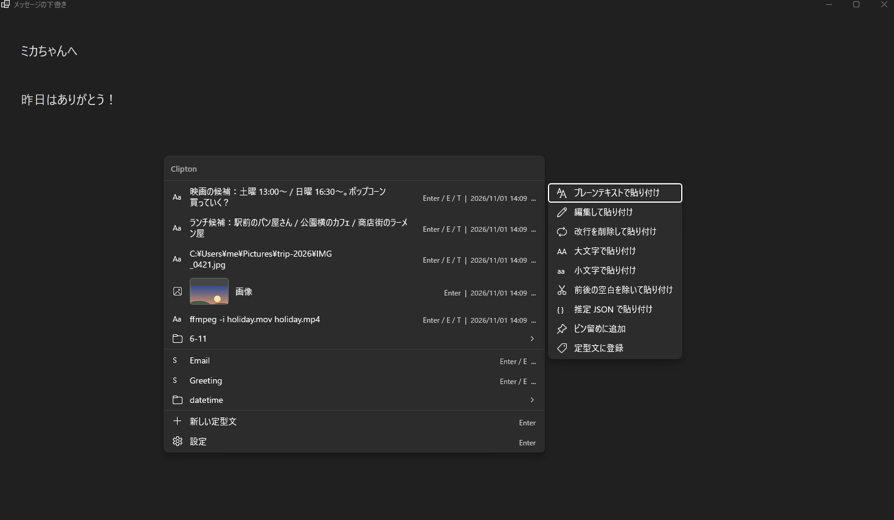
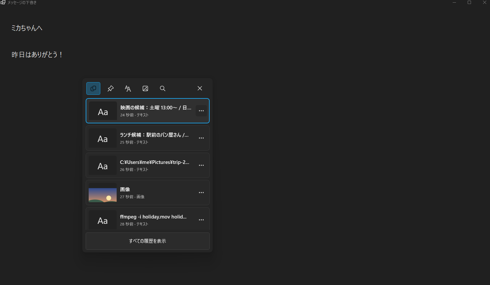
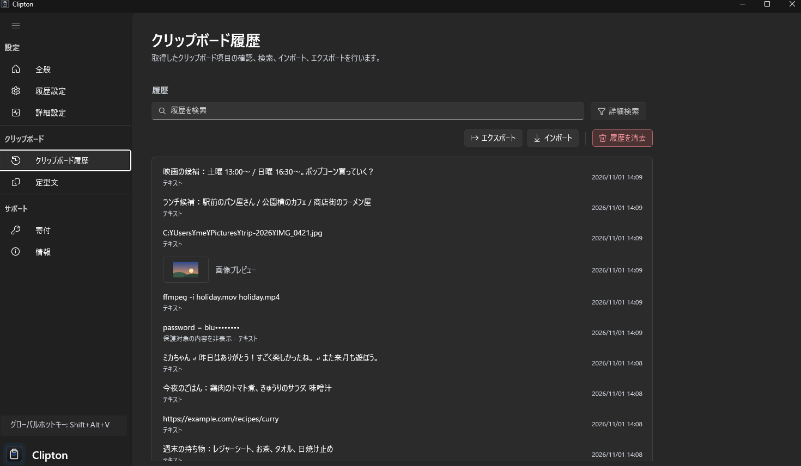
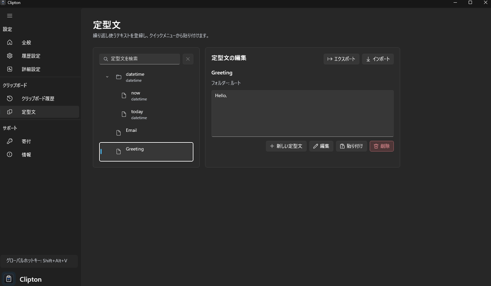
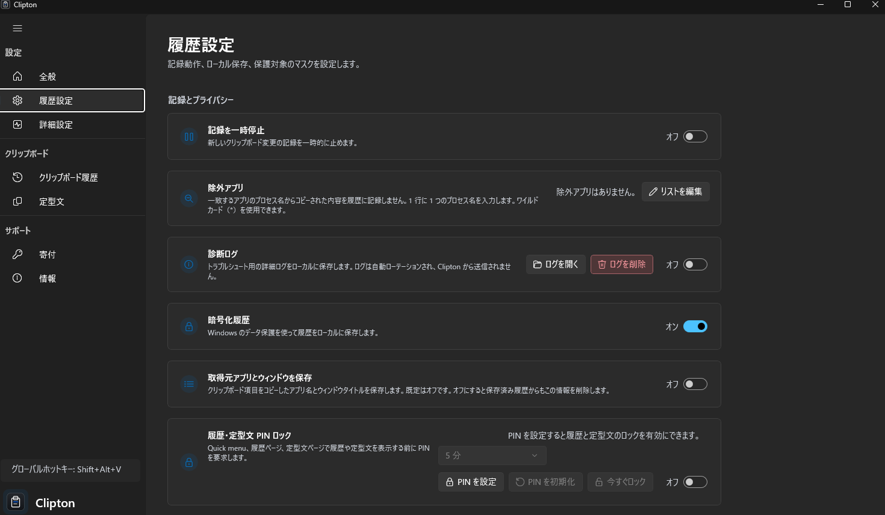
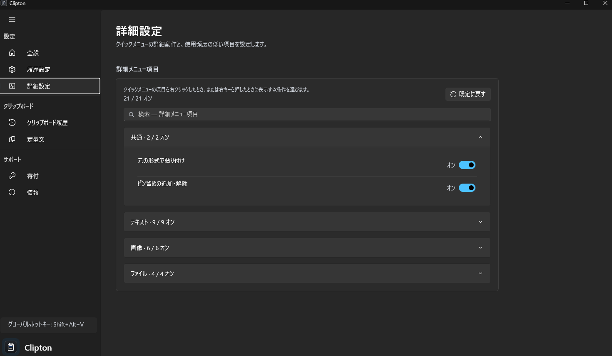

Clipton
Clipton は Windows 用のクリップボード管理アプリです。コピーした内容を履歴として残し、ホットキーで開くメニューから選んで貼り付けます。よく使う文章は定型文として登録できます。履歴はこの PC の中だけに保存され、クラウドへは送りません。
無料。Windows 10（バージョン 2004 以降）と Windows 11 に対応しています。


できること
貼り付け方を選ぶ
項目を右クリックするか、アプリケーションキーを押すと貼り付けオプションが開きます。プレーンテキスト、改行を削除、大文字・小文字、前後の空白を除く、推定 JSON などから選べます。


画像を見ながら選ぶ
メニューの表示を「リッチ」に切り替えると、画像のサムネイルを大きく表示します。Space で内容をプレビューできます。


履歴を検索する
テキスト、リッチテキスト、HTML、画像、ファイルのコピーを記録します。設定画面の「クリップボード履歴」で検索や絞り込みができ、エクスポートとインポートにも対応しています。


定型文を登録する
よく使う文章をフォルダーに分けて登録できます。日付や時刻などの変数を入れておくと、貼り付けるときに値に置き換わります。


記録しないものを決める
記録の一時停止、記録しないアプリの指定、保護対象の伏せ字表示、PIN ロック、履歴の暗号化を「履歴設定」で設定できます。


右クリックメニューを整える
「詳細設定」で、右クリックしたときに表示する貼り付け操作を選べます。使わない操作を隠して、メニューを短くできます。


そのほか
- 表示はライト、ダーク、Windows の設定に合わせる、から選べます。
- 表示言語は日本語、英語、ドイツ語、スペイン語、フランス語、韓国語、簡体字中国語の 7 つです。
- Windows へのサインイン時に自動で起動できます。
- 更新は Microsoft Store を通じて確認します。自動確認はオフにできます。
始め方
- Microsoft Store からインストールします。
- 起動するとタスクトレイに常駐します。トレイアイコンをダブルクリックすると設定画面が開きます。
- 何かをコピーしてから Shift+Alt+V を押すと、コピーした内容がメニューに表示されます。
画面
Tips
メニューで使えるキー
| Enter | 貼り付ける |
|---|---|
| T | 書式なしのテキストで貼り付ける |
| E | 編集してから貼り付ける |
| ↑↓ ←→ | 項目を移動する、フォルダーを開く・戻る |
| Space | 内容をプレビューする（リッチ表示） |
| Ctrl+F | 検索する |
| Ctrl+M | 伏せ字の内容を一時的に表示する |
| Ctrl+D | コピーした日時を表示する |
履歴から定型文を作る
「クリップボード履歴」で項目を選ぶと、その内容で定型文を登録できます。メニューの貼り付けオプションにある「定型文に登録」からも登録できます。
日付やファイル名を差し込む
定型文に {{date}}、{{adddays:7}}、{{filename}} などの変数を書くと、貼り付けるときに値に置き換わります。使える変数は変数の一覧にまとめています。
ホットキーが他のアプリと重なったとき
Shift+Alt+V が使えない場合は、用意してある別の組み合わせに自動で切り替わります。設定画面で好きな組み合わせに変えることもできます。
パスワード管理アプリを記録しない
「履歴設定」の除外アプリにパスワード管理アプリを追加すると、そのアプリからのコピーは記録しません。少しのあいだ止めたいときは、記録の一時停止を使います。
よくある質問
料金はかかりますか？
無料です。広告もありません。
履歴はどこに保存されますか？
この PC の %APPDATA%\Clipton に保存されます。クラウドへの同期や送信はしません。履歴は暗号化することもできます。
インターネットに接続しますか？
Microsoft Store 版は、更新があるかを Microsoft Store に確認するときだけ通信します。クリップボードの内容は送りません。自動確認は「情報」ページでオフにできます。
Windows のクリップボード履歴（Win+V）との違いは？
Clipton では、定型文の登録、貼り付け方の選択、記録しないアプリの指定、履歴の暗号化と PIN ロックができます。Win+V と同時に使うこともできます。
パスワードをコピーしても大丈夫ですか？
パスワードなどの保護対象と判断した内容は、メニューと履歴で伏せ字にします。より確実にするには、パスワード管理アプリを除外アプリに追加するか、記録を一時停止してください。
対応している Windows は？
Windows 10（バージョン 2004 以降）と Windows 11 です。
問い合わせや不具合の報告はどこからできますか？
GitHub Issues からご連絡ください。
更新情報
- Microsoft Store 版の更新を自動で確認し、「情報」ページからインストールできるようになりました。
- 終了や履歴の消去など、影響の大きい操作を色で区別し、終了する前に確認するようにしました。
- 設定画面のサイドバーを「設定」「クリップボード」「サポート」に分けました。
- 利用規約、プライバシーポリシー、ライセンスをアプリ内で読めるようになりました。